Linking the Flame Age of Fire War vs Dragons Age of Ancients
Lore
Age of Ancients
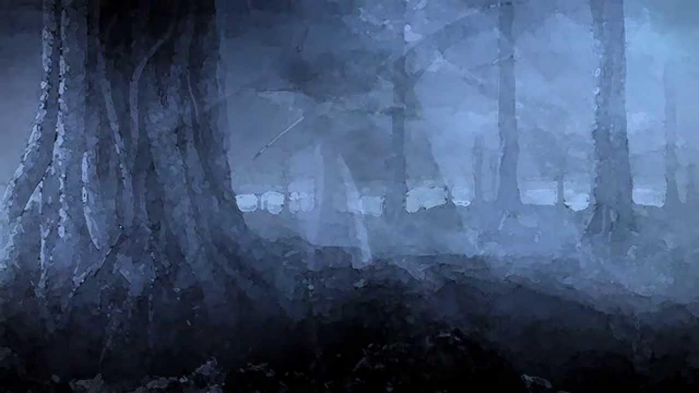 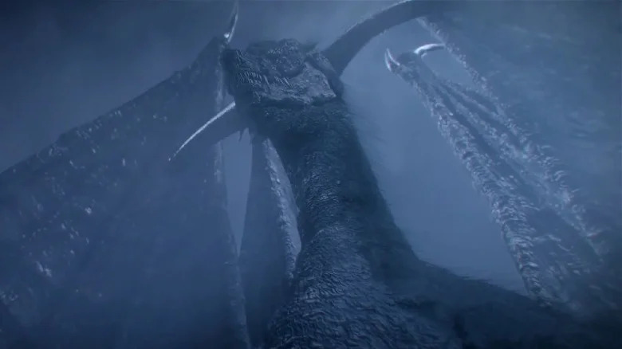 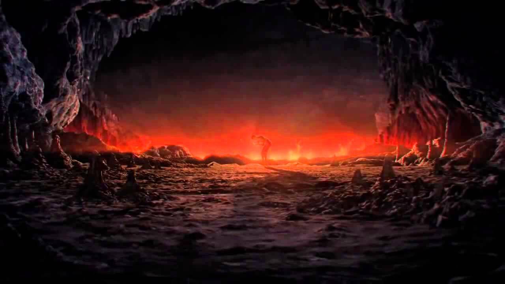 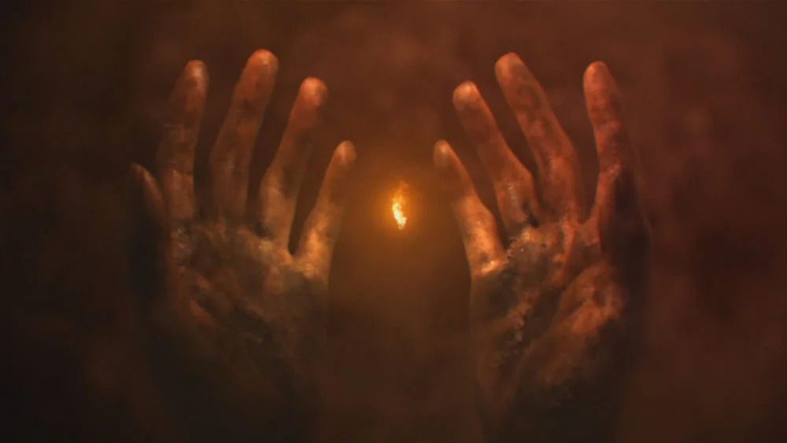Time Stands Still
Before fire, there was no disparity and fog clouded the land. Nobody lived or died as the ancient dragons watched over this grey world. That is, until the first flame began to spark deep underground. With light, came disparity and time was set into motion. Once this fire had burned for a time, four creatures found Lord Souls amongst the flames. The great Lord Gwyn took the soul of light, the Witch of Izalith took the soul of life, and Nito, First of the Dead, took the soul of death. There was a fourth soul collected by the Furtive Pygmy, thought to be a long forgotten ancestor of humanity. The soul that he claimed was the Dark Soul, otherwise known as the soul of man. This provided the hollows drifting around in the dark with humanity, and thus was the start of the human race. Alas, while the other three lord souls brought great power and godhood, the humans' power was much lesser.
War against the Dragons
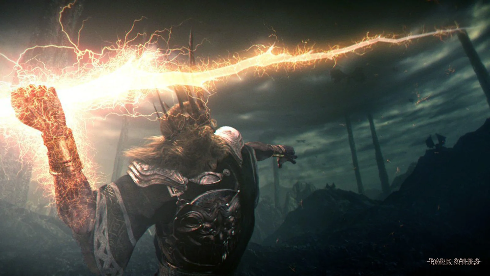 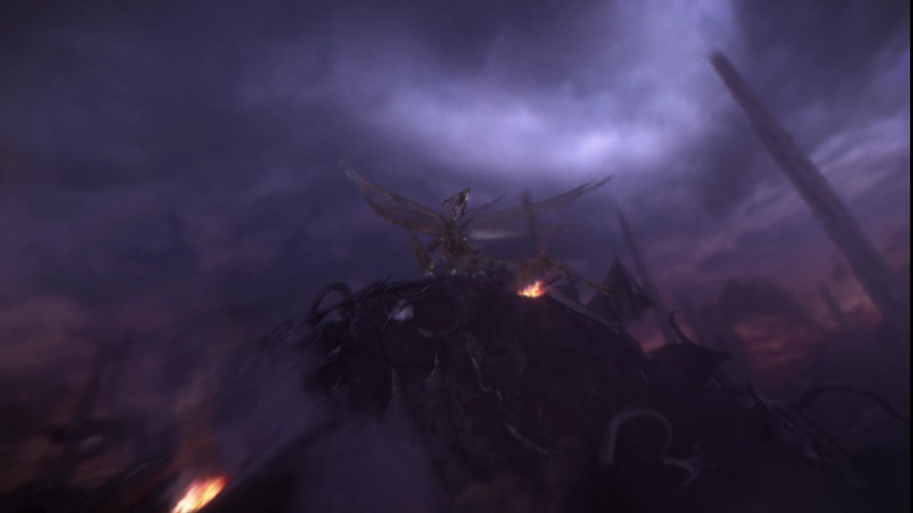 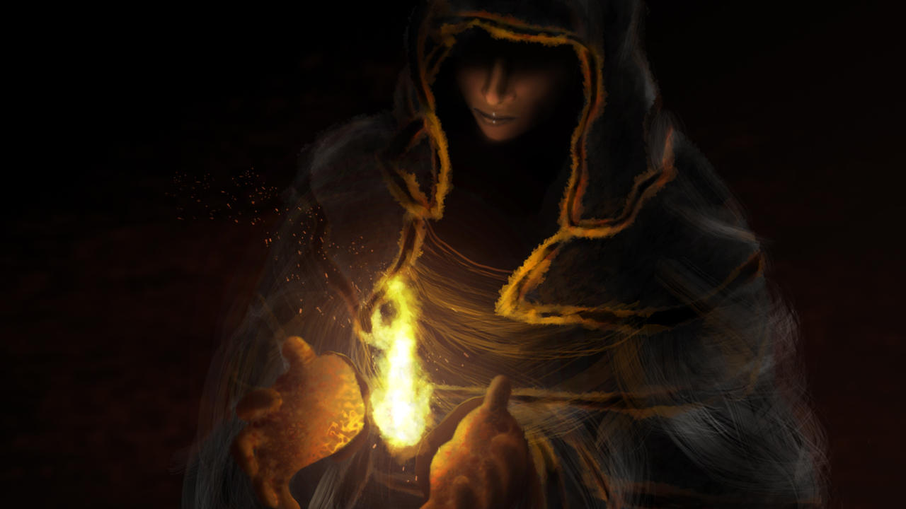 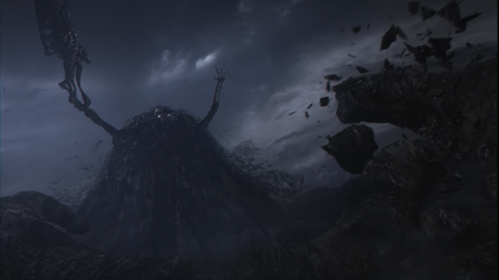Clash of the Titans
Once they had gained enough power and influence, the beings that inherited the Lord Souls took up arms against the ancient dragons. Led by Gwyn, the lords created armies of many races to fight the dragons. There were divisions of humans, giants, demigods and slave-knights amongst the ranks. This war was long and treacherous, with no lack of drama.
Seath the Scaleless
Seath the Scaleless betrayed his own kind, siding with Gwyn and the ancient Lords in the fight against the dragons. Seath was a scaleless dragon and therefore did not have the everlasting scales that give dragons immortality. It is theorized that Seath's betrayal of the dragons may have been a result of his wish to obtain dragon scales, but he was unable to use the ones of the dragons slain in the war. Dragon scales are connected to the dragon they are apart of, and cannot continue to function once their host has passed away. Alas, Seath's betrayal may have been in vain, but he was still handsomely rewarded following the war.
Demons and Undead
The Witch of Izalith wielded her great soul to create the chaos flame, birthing demonkind to help in the fight against the ancient dragons. The Witch and her Daughters of Chaos were incredibly effective, conjuring up forbidden chaos pyromancies. Gravelord Nito assisted alongside them, leading his undead legion into battle while unleashing a miasma of plague and death. Ultimately, each of these parties played a pivotal role in the fight against the dragons and received domain in Lordran following the war.
The Deciding Factor
The turning point in the war came from Seath, as he informed Lord Gwyn that the dragons impenetrable scales had one major weakness - lightning. Gwyn wielded his Lord Soul to create holy lightning magic, allowing his troops to fire wave after wave of lightning to down the immortal beasts. This would lead to Gwyn and his compatriots being victorious over the ancient dragons, pushing them away into hiding. Thus, in the time following, Gwyn created the kingdom of Lordran and the age of fire truly begins.
Age of Fire
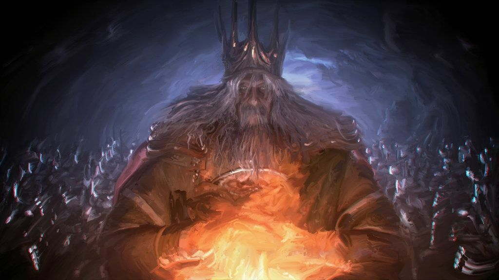 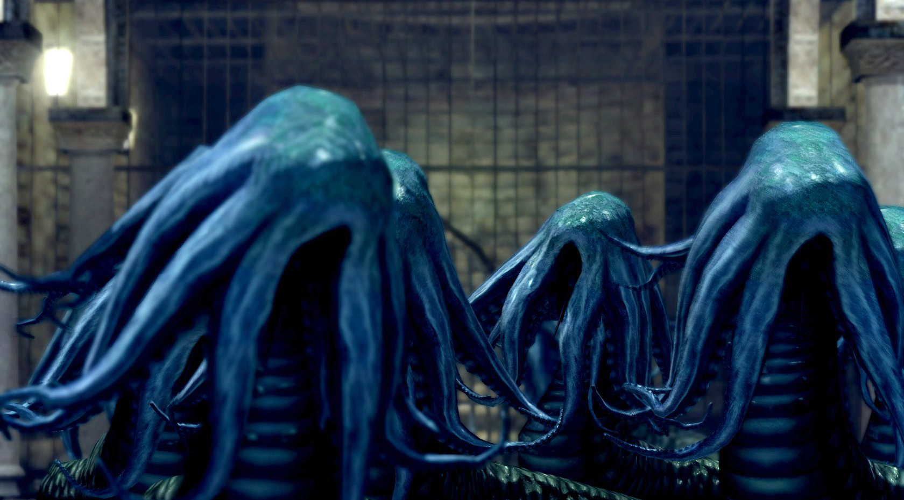 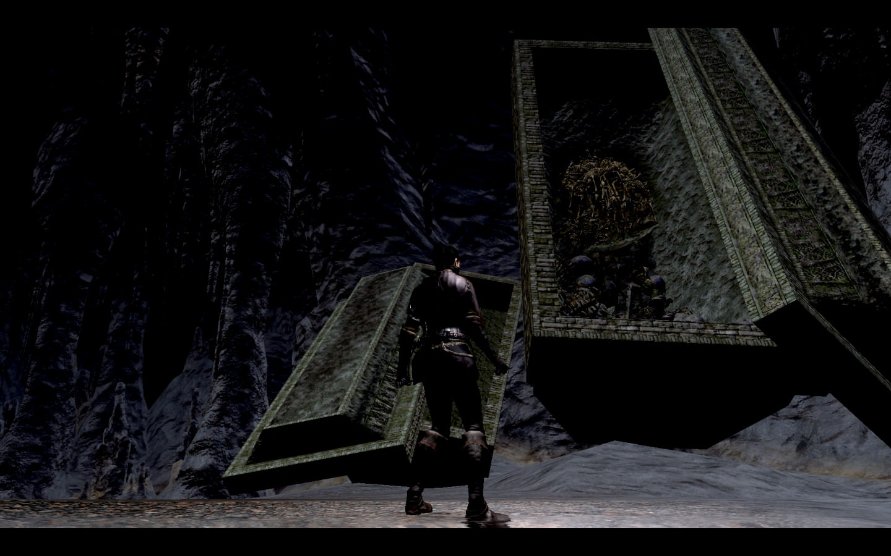
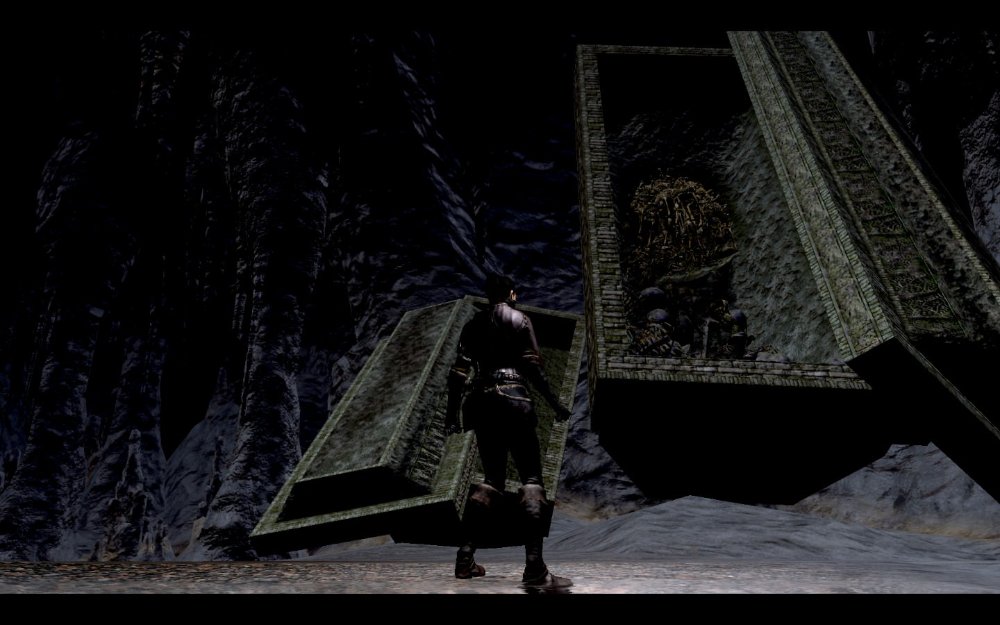
Establishing Lordran
Once the Ancient Dragons were defeated, Lord Gwyn began creating the great Kingdom of Lordran. He gifted the Duke's archives to Seath the Scaleless as a reward for his efforts in the war. To the Witch of Izalith, her city of Izalith and the Demon Ruins. Last but not least, Gwyn gave the Catacombs and the Tomb of the Giants to the Gravelord Nito. These domains were pillars of Lordran for many years. As the fire continued to burn, prosperity blossomed inside the kingdom.
Gravelord Nito
Despite his activities with the Gravelord covenant, not much is known about Nito after the war with the ancient dragons. It is theorized that the first of the dead remained deep in the Tomb of the Giants, comforting the dead that are brought into his domain. By the time that we venture through Lordran, Nito is still waiting in his coffin, dutifully protecting his people and their home.
The Witch of Izalith
After creating the chaos flame to fight in the war against the dragons, the Witch of Izalith continued to lead demonkind as their civilization in Izalith grew. Eventually, the flame became unstable and began to corrupt the Witch and her daughters until they were consumed by chaos. Now all that remains are the crumbling ruins of Lost Izalith, the Witch and her daughters scattered across the underworld as the first flame begins to fade.
Seath the Scaleless
Once Seath gained control of the Duke's Archives, the dragon spent years and years studying immortality. Seath's work resulted in the discovery of the immortality crystal, a stone that could keep Seath invincible so long as it is intact. After making less and less progress past this, Seath began taking his experiments to the extreme. It would appear he began to kidnap residents of Lordan to use in his work as test subjects, while keeping a low profile as not to attract the ire of Gwyn. After Gwyn's leave, Seath seized control over the kingdom. He sent his channelers across Lordran in hopes of scouting the region and using them to kidnap more civilians for his experiments. By the time we face Seath, the mad dragon is holding onto life through his crystal and will do anything he can to protect his immortality.
Lord Gwyn
Great Lord Gwyn created the great city of Anor Londo, City of the Gods. His palace was the ire of the kingdom, and he married an unknown woman who gave birth to three known children. While we know that Gwyn had a daughter named Gwynevere and a son named Gwyndolin, we do not encounter Gwyn's firstborn son until Dark Souls 3 when we encounter the Nameless King. Gwyn's firstborn was supposedly banished from Lordran for allying with the dragons, as he flies on a drake in his Dark Souls 3 boss fight. From all accounts, the Age of Fire under Gwyn was mostly prosperous and as far as we know he was regarded as a good leader. Of course, all good things have to come to an end and after some time the first flame begins to fade.
Linking the First Flame
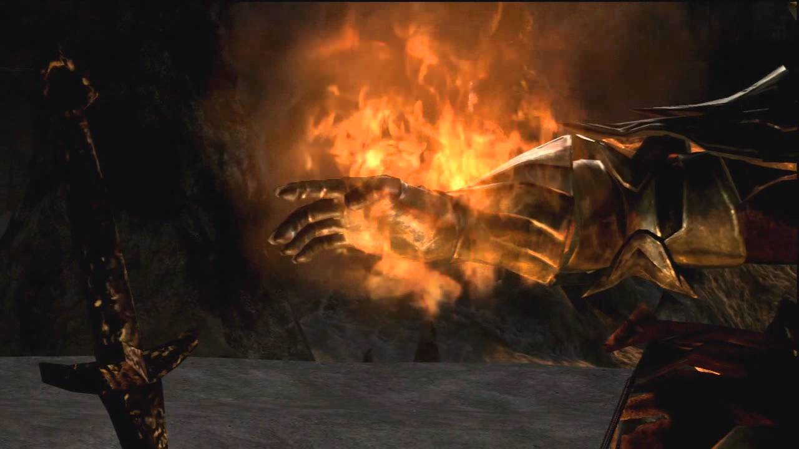 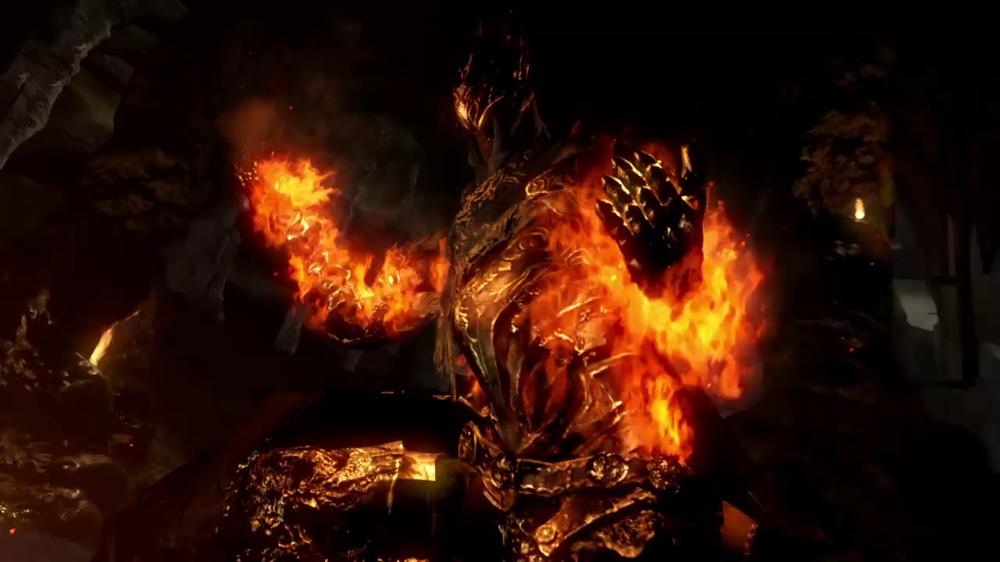 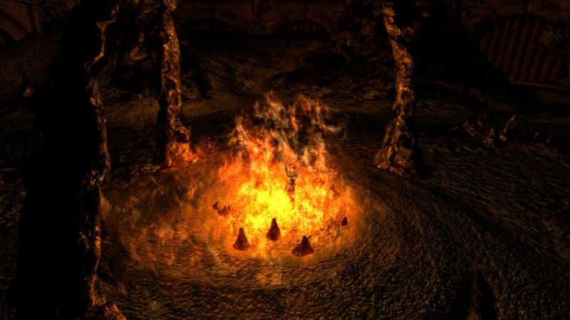 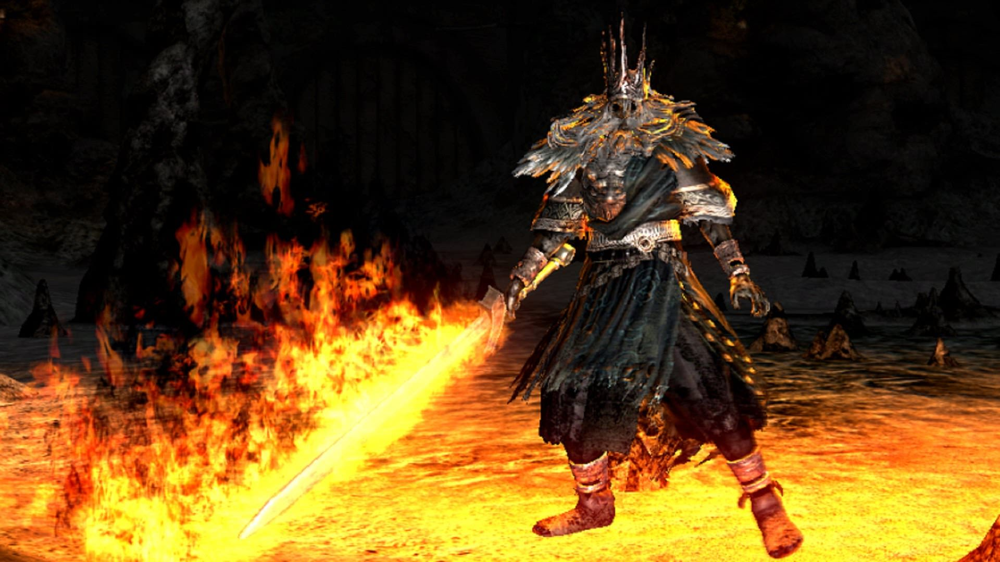Fear of the Dark
Gwyn's fear of the Dark Soul and the Abyss started in Oolacile, where Manus, a primevil man, was awoken causing the abyss to spread. Fearing the dark and the power that the humans could wield, Gwyn cursed humanity with the darksign to contain the Dark Soul within man and prevent them from dying. This disturbance of the natural cycle caused men to go insane after dying over and over again, eventually forgetting who they were and what their purpose in the world was. This is seen as the first sin, and Gwyn's greatest error as the leader of Lordran. His fear got the best of him and allowed him to make a reprehensible decision that plagues Lordran to this day.
The Fall of Gwyn and Lordran
As the first flame finally began to fade, Gwyn and his compatriots were unsuccessful in efforts to prolong the flame artificially. The reason behind keeping the flame lit lies with the Abyss, a dark and corrupting essence created from darkness and the dark soul within man. Gwyn feared the dark, and decided they must prolong the age of fire to fight against it. They tried to feed the flame with Souls, but only powerful souls are strong enough to relink the first flame. It was eventually decided that Gwyn would sacrifice himself to the flame as his soul was the most powerful of all, allowing the flame to be rekindled for as long as possible before fading once more. By sacrificing himself, Lord Gwyn hollowed like the other Undead he had cursed and could not return from the Kiln. Without Gwyn, Lordran began to fall apart as the rulers of the land scrambled for control. Seath has arguably the biggest strangehold while the Witch of Izalith and Nito are content hiding away in their corners of the world. Gwyn's son Gwyndolin takes over Anor Londo, but all of the gods abandon the city. To this day, he casts a sunny visage upon the desolate city, hoping that a Chosen Undead will link the flame and prolong the Age of Fire once more.